Step 1 of 7
Discovery
Say what you want to make; the agent reads your project and your brief to pin down the real ask.
Real run · v0.1.0 + fixes
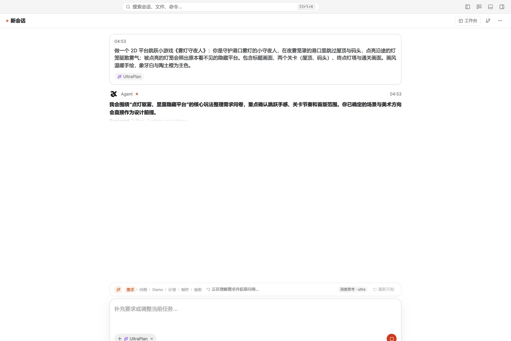
Windows 10/11 only for nowVersion 0.2.0 · free and open source
The workbench
Sessions, chat, the workbench and the project pane side by side — plans, code and a demo you can play all open as tabs.
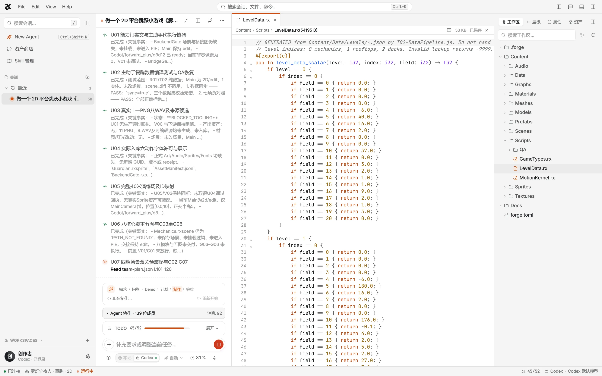
Sessions
Sessions and workspaces, a click apart.
Chat
The agent reports progress and asks for approval here.
Workbench
Plans, code and playable demos open as tabs.
Project pane
Files, hierarchy, properties and assets.
Status bar
Engine, model and run state at a glance.
Real run · v0.1.0 + fixes · Oct 26, 2026
Recorded from a real run powered by Codex: UltraPlan is producing the 2D platformer Lantern Keeper, and the open tab is a level-data script the agents wrote. Compiling and passing checks doesn’t make it fun — that part is yours to judge. “+ fixes” means the capture used v0.1.0 with fix patches applied. The app’s interface is in Chinese; the OS user name and local paths have been replaced.
Modes
Switch the mode in the composer and the agent switches how it works.
Agent01 / 08
It reads the project, calls the tools and edits the scene — every step stays in the chat.
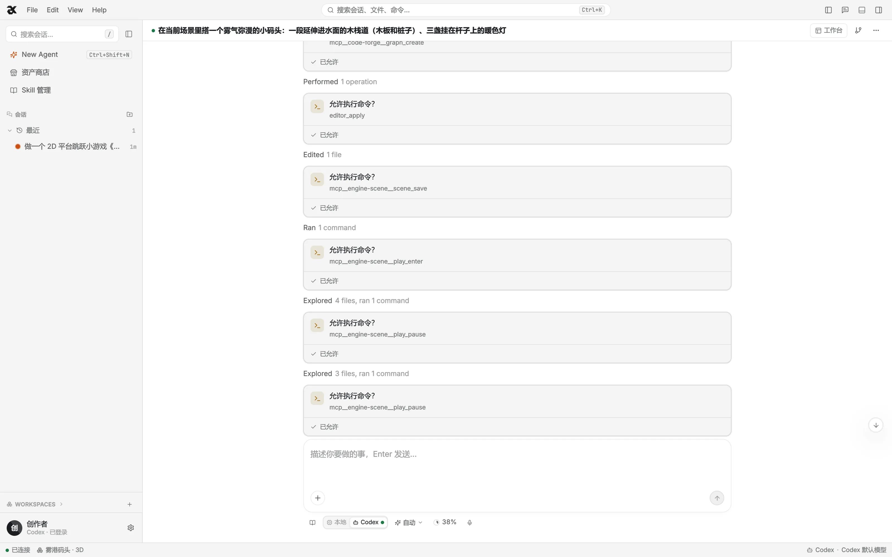
Every screen is a real run, driven by Codex; the app’s interface is in Chinese. Output quality depends on the model, and passing automated checks doesn’t make a game fun.
UltraPlan
Describe the game in a sentence. It researches, asks a few questions and builds a playable demo for you to try. Only once you approve does it write the plan, staff a team and walk you through acceptance.
Real run · Lantern Keeper (re-run) · v0.1.0 + fixes · driven by Codex
Say what you want to make; the agent reads your project and your brief to pin down the real ask.
Real run · v0.1.0 + fixes

This run: 23 questions, 15 handed to the agent in one click. Only the stack is yours to pick.
Real run · v0.1.0 + fixes
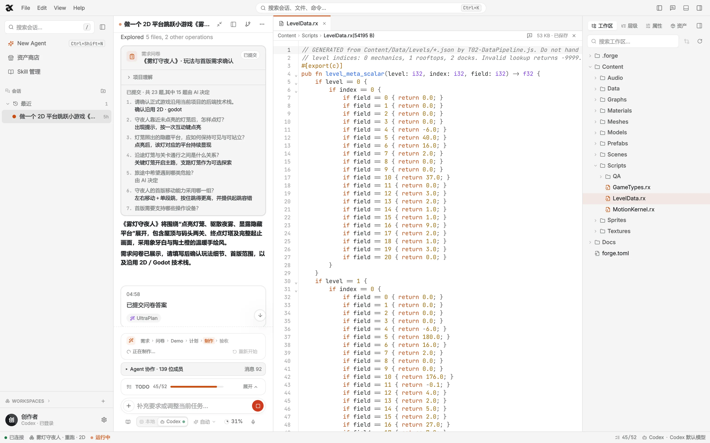
It builds an HTML version, then plays it in a real browser to check itself: 12/12 assertions passed.
Real run · v0.1.0 + fixes
The demo runs inside the workbench. Approve it or ask for changes — whether it’s fun is your call.
Real run · v0.1.0 + fixes
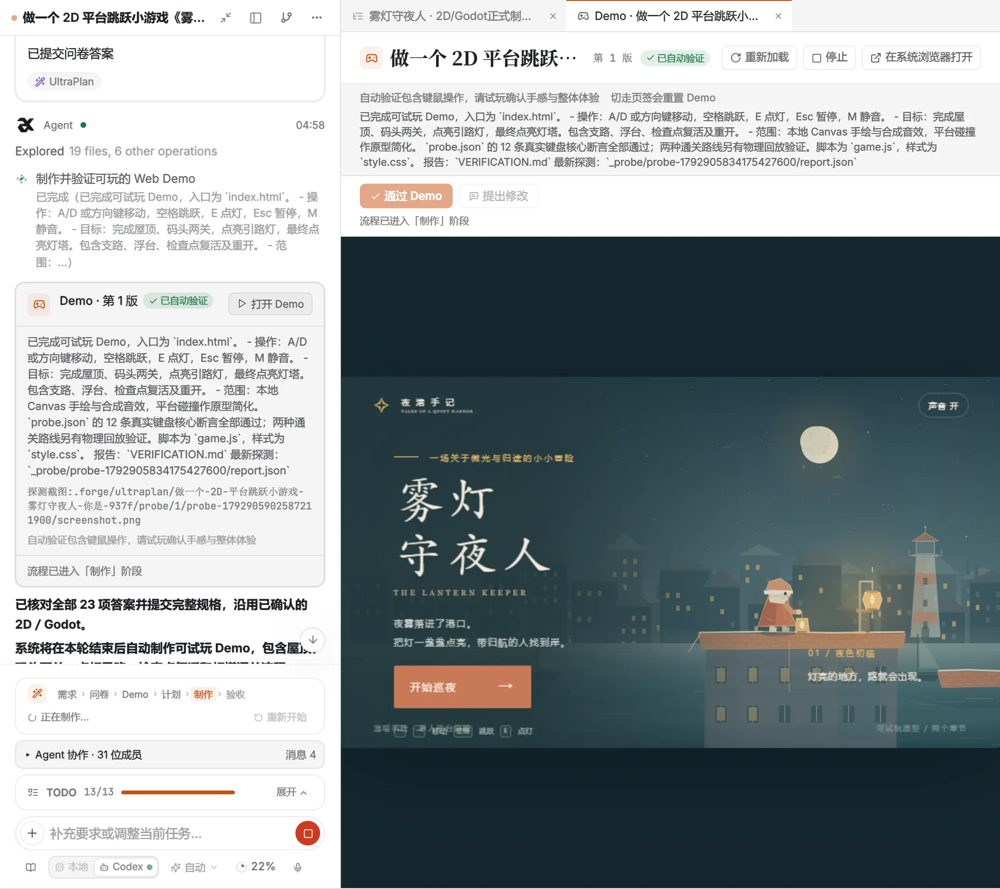
Needs a keyboard — best on a computer. The game’s text is in Chinese.
Only after the demo passes is the plan written: 13 tasks, 19 automated and 4 human checks.
Real run · v0.1.0 + fixes
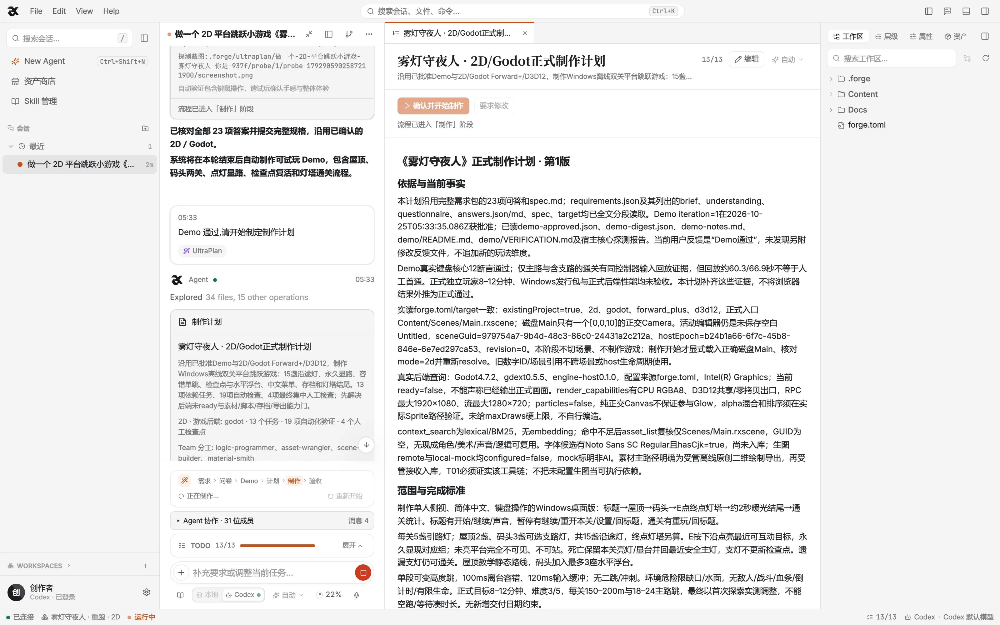
A team split by role takes the plan, up to 4 tasks at once; a failed check gets a targeted fix.
Real run · v0.1.0 + fixes
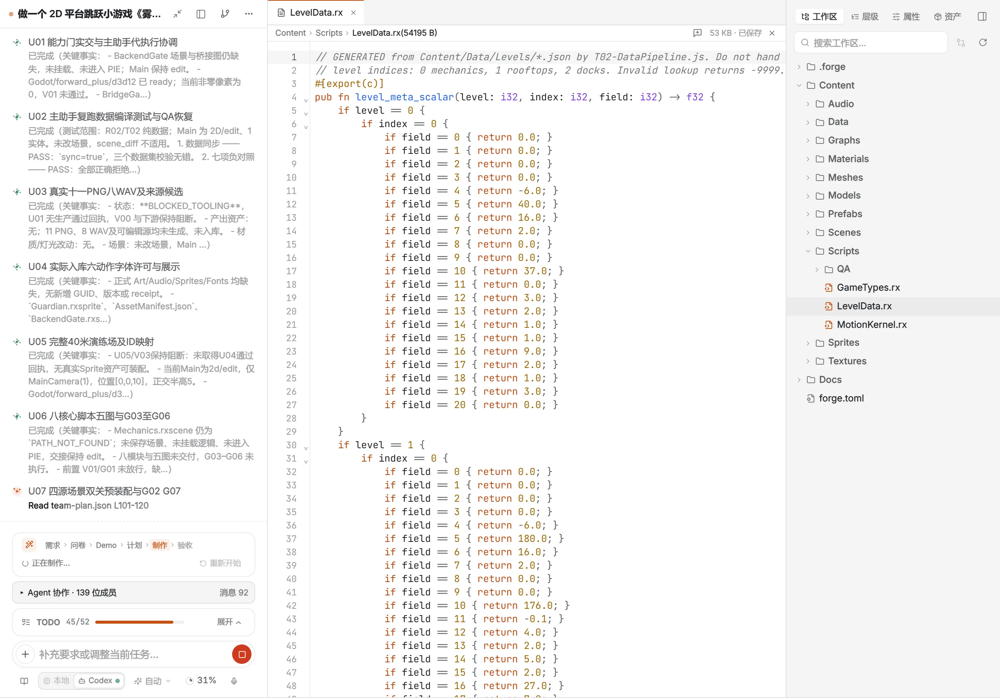
After the checks, a few items are yours to verify by hand: feel, pacing, look. Passing checks doesn’t make it fun.
Every captured screen and number comes from this one real run (Oct 25, 2026) and belongs to it — not to the product’s defaults. Output quality varies with the model and the brief.
Design · Team
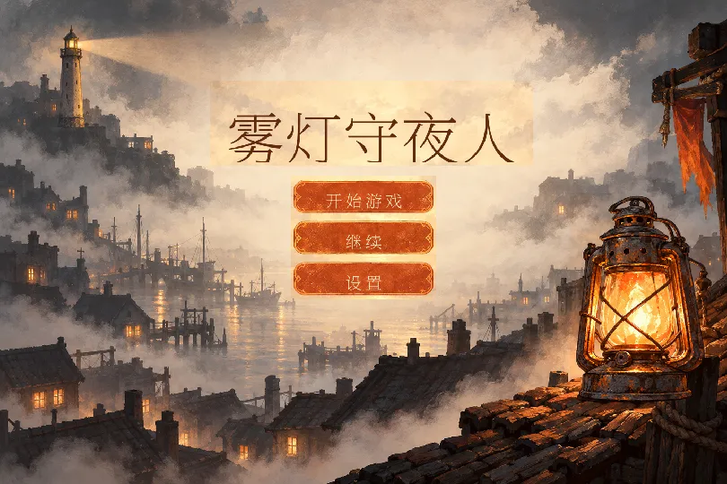
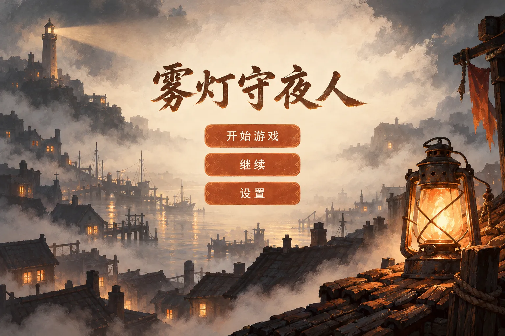
Pick a 2D mockup; it splits the picture into elements and rebuilds them in the engine — titles and buttons stay editable text.
Real run · v0.1.0
One shared board, several agents working by role — 4 at once by default. You can step in at any time.
Real run · v0.1.0
The collaboration board of UltraPlan’s production stage
Showcase
A harbor built from a paragraph. A playable demo from one questionnaire. A mockup rebuilt, element by element, into a title screen.
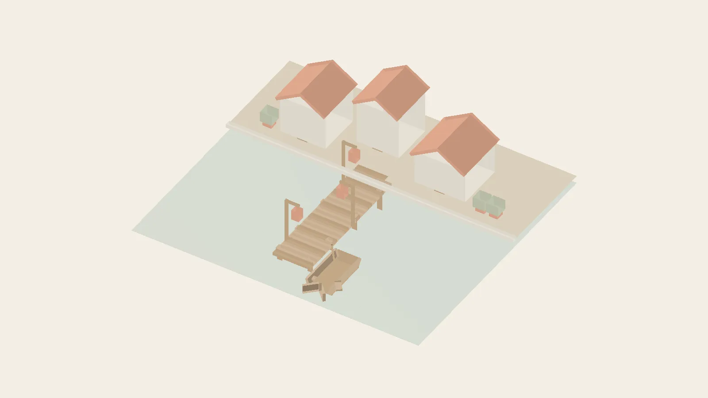
AgentReal run · v0.1.0 + fixes
One paragraph to the agent: primitives, material graphs and a camera. When the colours came out wrong, one more sentence — it found the cause and fixed them.
UltraPlanReal run · v0.1.0 + fixes
The prototype UltraPlan builds right after its questionnaire: light a lantern, reveal the platforms in the fog.
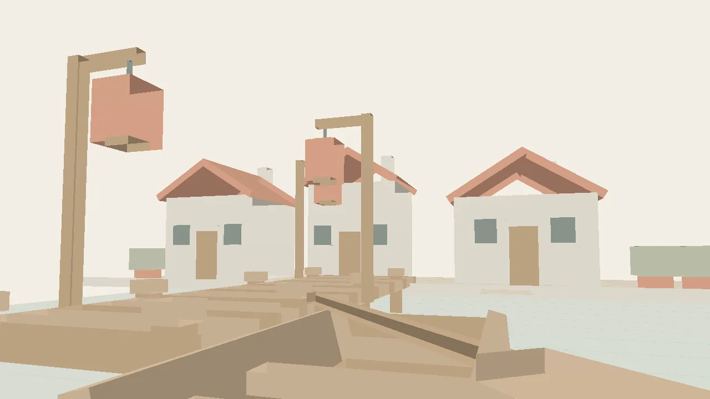
AgentReal run · v0.1.0 + fixes
Same scene, one more request for a low camera — only the camera moved.
DesignReal run · v0.1.0
Design mode rebuilt the mockup in the engine; the title and buttons are live, editable text.
AgentReal run · v0.1.0 + fixes
One paragraph to the agent: primitives, material graphs and a camera. When the colours came out wrong, one more sentence — it found the cause and fixed them.
“+ fixes”: re-run on v0.1.0 after patching issues that stalled the production stage; those fixes are not in a release yet. What the AI produces varies with the model and the request — and passing automated checks doesn’t mean the game is fun.
Slide 1 of 4
Safety & control
You decide what the agent may read and change: read-only, ask before every write, or let it run on its own.
In the app · 只读
Can query, but can’t write to project files, scenes or assets.
In the app · 写入需批准
Reads run automatically; every write tool asks for approval first.
In the app · 自动执行
Reads and writes run automatically, still within tool and workspace boundaries.
Default for new sessionsForce-deleting assets still in use, uninstalling packages, deleting skills: each raises a proposal and runs only once you approve it.
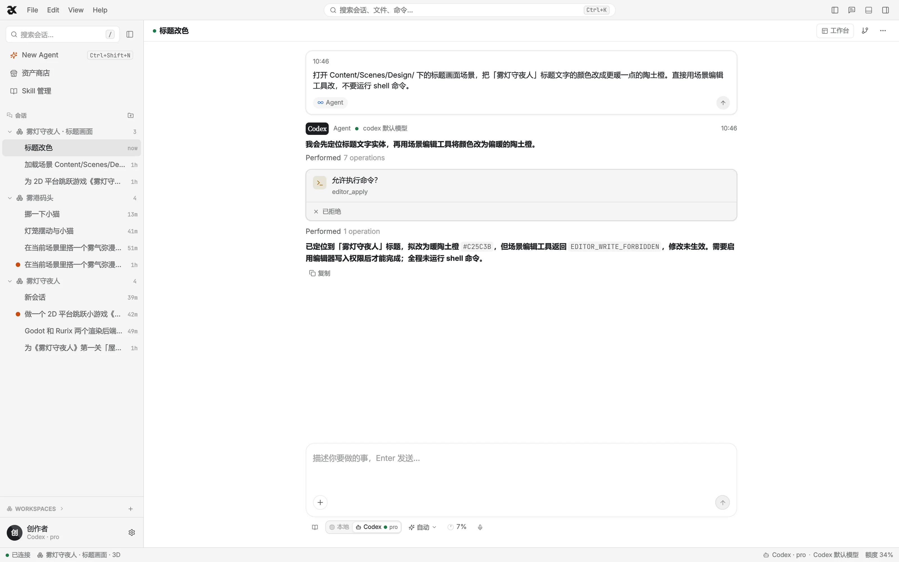
The change did not take effect … No shell command was run at any point.
Scene edits undo step by step, and the built-in roles’ and skills’ playbooks have the agent save a scene checkpoint before big changes, so one step rolls them back. There are no automatic snapshots — keep the project’s history in your own git.
Under the hood
Every step you see in the conversation is a concrete tool call underneath.
¹ 127 is what the running v0.1.0 lists across its 7 always-on servers; connect Blender and blender-bridge adds 11 more.
Hover or tap a server to see what it does.
4.7.2 · D3D12
The default for new 2D projects, and an option for 3D.
Godot’s own scene matrix: a render check, no pixel comparison.
In-house · Vulkan · Jolt · Meshlets
The default for new 3D projects.
Regression baseline across the Godot integration, compared by frame hash.
The agent, the engine and your project files stay on your PC; only requests to the model and to the generation or store services you connect leave it. Output quality depends on the model and isn’t guaranteed.
No coding needed: say what you want and the agent plans, writes scripts and builds the scene while you steer. You do connect one model yourself: your own API key (OpenAI-compatible), Codex signed in with ChatGPT, or a cloud service you host.
Only Windows 10 (1809+) and Windows 11, x64 — no macOS or Linux build yet. The installer isn’t code-signed, so SmartScreen may step in: click More info, then Run anyway, and check the SHA-256 first if you like. Updates are manual: run the new installer over the old one; projects and settings stay.
No. Results depend on the model you connect — the same task can turn out very differently with another model, or on another day. Passing automated checks and playtest assertions means the game runs and meets its spec, not that it’s fun. The last test is yours to play.
Design mode recreates 2D screens only — hand 3D scenes to Agent or UltraPlan. The app’s interface is in Simplified Chinese only. There’s no one-click export for release yet: games run inside the workbench, and scenes, scripts and assets are plain files in your workspace.
On your own computer — in %APPDATA%\RurixForge\data by default — with API keys encrypted by Windows DPAPI. RurixForge is open source under Apache-2.0; the code is on GitHub.
Didn’t find your answer? Ask on GitHub
Windows 10/11 only for nowVersion 0.2.0 · free and open source